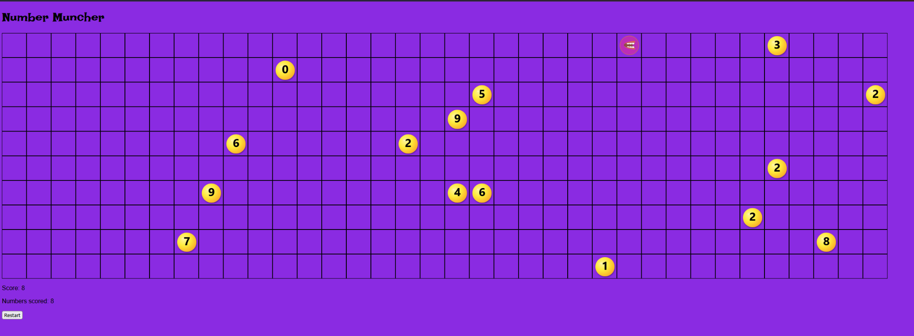
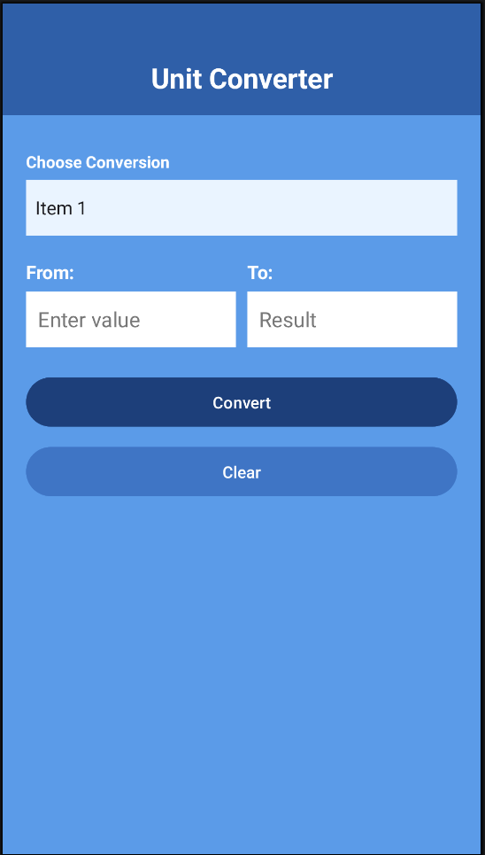
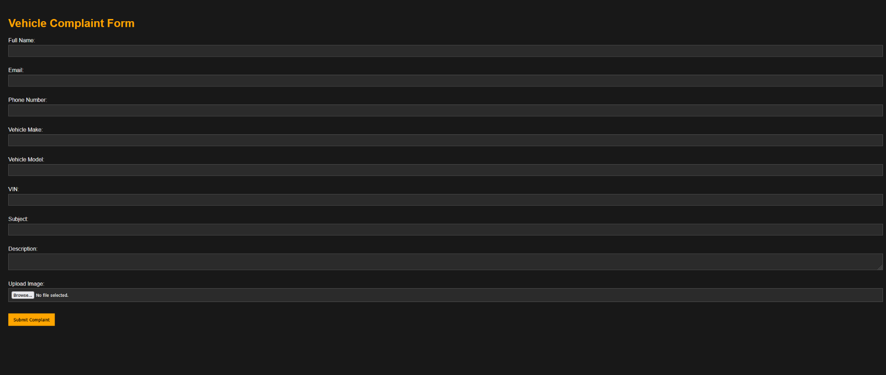

Programming and application development
JavaScript, HTML, CSS, Kotlin, Android UI, Node.js, Express, Handlebars and input validation.
Evidence: Number Muncher game, Unit Converter app, and RightDriveAuto complaint form below.
I'm Kyle Yee, a second-year Computer Systems Technology student at Saskatchewan Polytechnic with interests spanning software development, technical support, systems administration, and cybersecurity.
My studies have given me hands-on exposure to application development, databases, networking, enterprise support, and security. I enjoy learning how systems work, troubleshooting problems, and turning ideas into useful applications.
I'm pursuing entry-level opportunities in IT support, junior systems administration, and software development in Regina. My goal is to contribute to a technical team, keep building practical experience, and grow into greater responsibility.
Outside technology, I enjoy photography, snowboarding, and exploring new projects.
JavaScript, HTML, CSS, Kotlin, Android UI, Node.js, Express, Handlebars and input validation.
Evidence: Number Muncher game, Unit Converter app, and RightDriveAuto complaint form below.
Coursework in SQL, databases, networking, enterprise support and cybersecurity.
Evidence: Saskatchewan Polytechnic CST coursework and technical projects.
Problem-solving, attention to detail, organization, independent learning and communication.
Evidence: implementing game rules, validating mobile input, and designing a customer-facing form across three assignments.
Certifications: No external certifications listed.
Each example uses the Situation, Task, Action and Result (STAR) format and includes a screenshot of the application.
A browser-based grid game featuring an animated character, collectible numbers, a score display and restart controls.
JavaScriptHTMLCSSDOM manipulation

Artifact: Screenshot of the game interface above.
An Android application that converts between common temperature, weight, distance and time units.
KotlinAndroidXML layoutsInput validation

Artifact: Screenshot of the Android application above.
A web form for submitting vehicle complaints with customer details, vehicle information, a description and optional image.
Node.jsExpressHandlebarsMulterexpress-validator

Artifact: Screenshot of the complaint form above.
Computer Systems Technology Diploma · Second-year student
Relevant areas: programming, mobile development, databases, data structures, networking, enterprise support, and cybersecurity.
Target roles: Help Desk / Service Desk, Junior Systems or Network Support, Junior Software Developer.
Skills: Kotlin, JavaScript, HTML, CSS, Node.js, Express, SQL fundamentals, troubleshooting and technical communication.
Selected experience: Coursework building interactive browser applications, Android utilities and server-side web forms.
I'm interested in opportunities to contribute, learn, and grow in Regina's technology community.
Email: Contact through GitHub until a professional email address is added.
GitHub: github.com/kyleyee-dev
For professional inquiries, please use the GitHub profile link above.